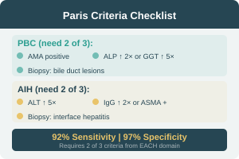

Paris Criteria — AIH–PBC Overlap Syndrome
Two of three criteria required from each domain. Sensitivity 92%, Specificity 97%.
PBC Criteria (≥2)
AIH Criteria (≥2)
Clinical Utility
The Paris criteria improved diagnosis of AIH–PBC overlap with sensitivity of 92% and specificity of 97%, enabling early recognition and appropriate treatment with steroids, azathioprine, and UDCA.
AIH–PSC Overlap Treatment
Steroids + Azathioprine + Ursodeoxycholic Acid (UDCA)
